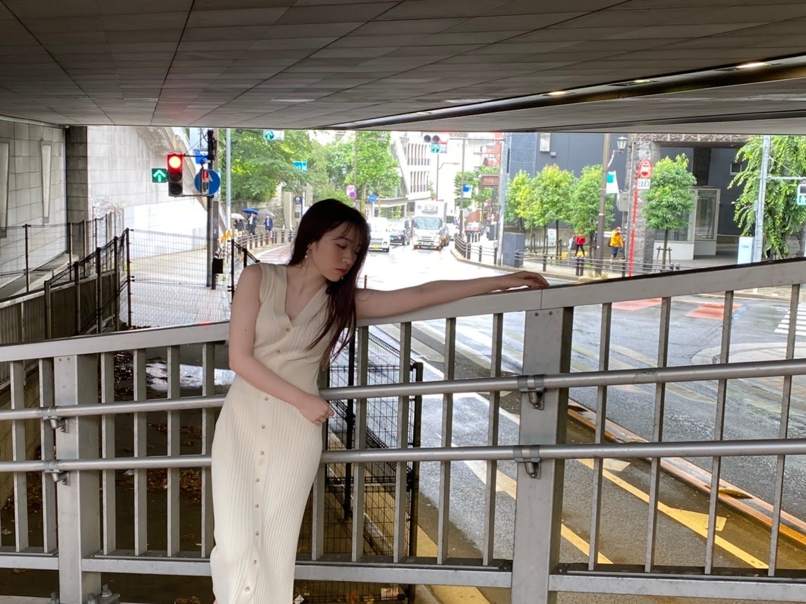
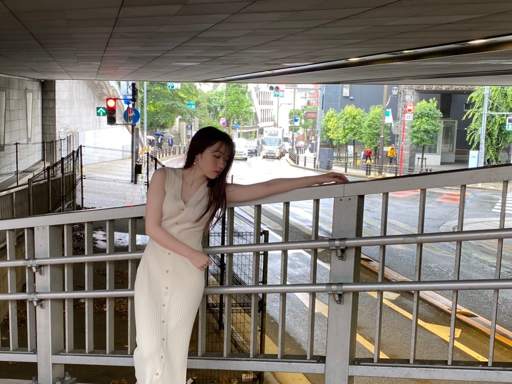

2021/0831Tueありがとう
乃木坂46の渡辺みり愛です。
こうやって挨拶できるのも
これがいよいよ最後になりました
寂しいものですね笑
まずはSHOWROOM見てくださった皆様
ありがとうございました！
トレンド1位にもなったそうで...
本当に凄いことです。嬉しい、、、
みんな本当にありがとう！！！泣
卒業発表してから3ヶ月間
もうすっきりだよ！！というくらい
乃木坂を堪能させていただきました！
メンバーともたくさんお話しました
乃木坂46が大好きでたまりません笑




有難いことに1st写真集を出すこと、
そして発売前重版も決まり
本当に嬉しいです。
皆様、ありがとうございます！
皆様に、メンバーみんなに、
スタッフの皆様に
出会えてよかった。
最高の8年半でした！！
またどこかで会えますように。
みり愛
乃木坂46の渡辺みり愛です。
こうやって挨拶できるのも
これがいよいよ最後になりました
寂しいものですね笑
まずはSHOWROOM見てくださった皆様
ありがとうございました！
トレンド1位にもなったそうで...
本当に凄いことです。嬉しい、、、
みんな本当にありがとう！！！泣
卒業発表してから3ヶ月間
もうすっきりだよ！！というくらい
乃木坂を堪能させていただきました！
メンバーともたくさんお話しました
乃木坂46が大好きでたまりません笑

有難いことに1st写真集を出すこと、
そして発売前重版も決まり
本当に嬉しいです。
皆様、ありがとうございます！
皆様に、メンバーみんなに、
スタッフの皆様に
出会えてよかった。
最高の8年半でした！！
またどこかで会えますように。
みり愛
2021/08/31 23:30


コメント(997)
元々乃木坂なんか全然興味なかったしアイドルなんか好きになるなんて思ってなかったけど、みり愛ちゃんに出会って、この子を推したい！そう思いました。でもみり愛ちゃんとはもっと早く出会いたかったなって思います。好きになってから半年くらいしかたっていないけど本当に幸せな時間でした。辛い時は乃木坂の曲を聴いて頑張ろうと思えたよ
風船は生きている私にとっても大好きな曲になったし、私の見えている世界をみり愛ちゃんは広げてくれました。私をアイドルの世界に連れてきてくれてありがとう、みり愛ちゃんは私の憧れ、生まれ変わったらみり愛ちゃんになりたいです笑ミーグリとか握手会とか行くことはできなかったけどファンの1人としてみり愛ちゃんのこと応援してました
これからみり愛ちゃんには好きなことをやってほしいし、いつまでも推し事させてください。100万人に愛されるみりおんらぶなみり愛ちゃんならどこへ行ったって大丈夫だと思います！改めて卒業おめでとう
乃木坂４６としての活動お疲れ様でした
色々思い切ってやり切れたのかしら？
中学生から長い間活動してきましてけど
実は、
まだ、今後の人生のほうが ずっとずっと長いのです。
今後も、
身近で親身にしてくれる方々のアドバイス貰いながら
みり愛さんの 納得できる人生を送っていけますように
みり愛さんが 幸せでありますように
心より お祈りしています。
たくさんの喜びと癒やしを ありがとう
では！
みり愛さんが卒業を発表してから、色々なことを思い返していたよ。
僕がみり愛さんを初めてしっかり観たのは「乃木坂って、どこ？」の『命は美しい』のヒット祈願でヘビを巻いた時だったな。
初めて握手した時は緊張したな。
かわいすぎてビックリした。
「あだ名をつけてもらえますか」と言ったあと、しばらくしてからまた握手した時に覚えてくれていてあだ名をくれた時は嬉しかったな。
みり愛さんが握手会で浴衣を着たとき、その場のノリで僕がカメラマンになってみり愛さんがモデルポーズをきめて写真を撮り続ける流れは謎だったけれど何か面白かったな。
…たくさんありすぎて書ききれないよ(笑)。
握手会やミーグリで話せるたびに嬉しかった。
番組や雑誌でみり愛さんを見るたびに嬉しかった。
みり愛さんの喜びは僕の喜びだった。
みり愛さんが辛そうだと僕も辛かった。
みり愛さんはたくさんのものをくれました。
本当に本当にありがとう。
貴女は最高です。
自慢の推しです。
グループを離れ、新たな道を進むみり愛さんをこれからもずっと応援し続けます。
それが僕の喜びであり、生きがいだから。
勝手にひっそり応援させてもらうからねー。
覚悟しておいてねー。
…このくだり、握手会やミーグリで何度も言ってごめんね(汗)。
でも、揺るがないよ。
では、最後にあらためて…
みり愛さん、お疲れさまでした。
本当にありがとうございました。
これからも応援し続けます。
体調には気をつけて。
幸せになってね！
みり愛に出会えて良かった。一生の思い出をありがとう。
大好きです。ずっと。
初めてアンダーライブを観て、ダンスがかっこよくて感動しました。もう乃木坂のライブでみり愛ちゃんの姿を観れないと思うと寂しいです。
本当にお疲れ様でした！これからも応援します！
思い出がありすぎるので、いつの日か乃木坂ファミリーで語りあおう！
またね！！！
昨日の配信観ました。
最後まで、らしい内容でしたね。
#みりあちゃんありがとう
ランキングが、じわじわ上がって
いくのを見て、「やっぱ、乃木坂だな」
と思いました (^-^)
素敵な『写真集』
感想や、好きな写真を直接伝えられないのは
本当に残念だけど、全部まとめて受け取ります。
でわ、名残り惜しいけれど、
僕も自分の進むべき電車に乗ることにします。
８年間 お疲れ様でした。
そして、ありがとう
P.S.
blog１つ前が、４期 松尾ちゃんなのも
決して偶然ではなく、必然なのでしょう。
昨日の配信観ました。
最後まで、らしい内容でしたね。
#みりあちゃんありがとう
ランキングが、じわじわ上がって
いくのを見て、「やっぱ、乃木坂だな」
と思いました (^-^)
素敵な『写真集』
感想や、好きな写真を直接伝えられないのは
本当に残念だけど、全部まとめて受け取ります。
でわ、名残り惜しいけれど、
僕も自分の進むべき電車に乗ることにします。
８年間 お疲れ様でした。
そして、ありがとう
P.S.
blog１つ前が、４期 松尾ちゃんなのも
決して偶然ではなく、必然なのでしょう。
握手会は1回だけしか行けなかったけど、あの時のことはいい思い出です。
ありがとうございました。
新しい世界でも頑張れ！！！
たくさんの思い出をありがとう！みり愛ちゃんを応援できたことが何よりの幸せで誇りです。史上最強の推しメンだよ！
みり愛ちゃんの輝く姿に何度も助けられました。
あなたがいつまでも笑顔でいられますように。
幸せな日々が訪れ、続きますように。
本当に本当にありがとう。
どんなことがあってもずっと味方だよ！
いつまでも応援しています。みり愛ちゃんとの思い出、一生忘れません！
本当にありがとう！
いつも格好いいダンスで魅せてくれてありがとうございました。
ガクたびの夜桜お七で踊るみり愛ちゃんの色気と気迫に圧倒されました。
それと最後のアンダラ、純奈ちゃんとのショパンの嘘つき！
何度も見たくなります。
8年半お疲れ様でした。
ご卒業おめでとうございます。
寂しいけれど、写真集があるから今は大丈夫です！(笑)
これからみり愛ちゃんが選ぶ道が、素敵な道になりますようにお祈りしています。
私に毎日幸せを与えてくれて、本当に感謝しかないです。
大好きでした、大好きです、これからも大好きです！
みり愛ちゃんの今後のご活躍を心から願っています！
8年もの長い間、本当にお疲れ様でした！
みり愛ちゃんを推すことができた私は幸せ者です♡
本当に卒業してしまったのですね。
本音は、まだ続けてほしかったなと、
今からでも復帰してくれないかなとも
SHOWROOM終わった後の脱力感は半端なかったです。
アンダーライブで急にスイッチが入って大きく踊る子を見つけ
みり愛ちゃんのダンスに魅了されて推し始めました。
僕の場合は、約６年間になるのかな、お世話になりました。
一番の思い出は
東京体育館、最終日トリプルアンコールをしてくれたコンサートが印象に残っています。
今までに数百公演いろいろなコンサートを見てきて過去最高でした。
今後これを超えるコンサートはないと思っています。
みり愛ちゃんのファンになって一番うれしかったことが
初選抜に選ばれた時の期間が嬉しくて楽しくて
歌番組もみり愛ちゃんを見つけては喜んでいました。
もう一度選抜の姿を見たかったですが、ぼくらファンの力が足りないこともあったかなと思うので
そこはごめんね。
まだ、しばらくは『みり愛単推し』でいようと思ってます。
簡単に次に行こうとは出来ない存在です。
最後にみり愛ちゃんが幸せであることを祈っています。
また、会えることも願ってます。
ありがとう
違うところでの活躍期待してます。これからも応援してます。頑張ってください。
これからは、乃木坂46一緒応援していきましょう。
色々楽しかったです。本当にありがとう❗
ついにこの日が来てしまったか、という感じ、みり愛ちゃんと定期的に話ができた握手会、ミーグリ、そして誰もを魅力したライブでのパフォーマンスが見れなくなると思うと辛いのが本音かな。。。ほんと握手会、ミーグリではこんなおじさんと友達感覚で話してくれたのが嬉しくて、元気の源になってました。
これからのみり愛ちゃんもそのストイックで根暗で明るい魅力を武器に素晴らしい人生となること、祈っております！！
俺も負けじとバルクアップ目指すぞー！！
GOOD LUCK！！また必ず逢おう！！
卒業おめでとう。
暫くは休憩するんだね。
ゆっくり休憩して、
じっくりこれからの事を考え下さい。
凄く大人になったけど、
まだまだ若いので、
何でもできますね。
これから何をする事になっても、
ずっと応援して、幸せを祈っています。
くれぐれも、
身体には気をつけて下さいね。
みり愛ちゃんに出会えてよかった！
今まで本当にありがとう♪
卒業してもずっと推しでいさせてね！
大好きです(>_<)
そしてたくさんたくさん
ありがとうございました！
みり愛さんのダンスが好きで、
いつもライブではつい目で追っていました。
46時間テレビでのダンス披露で
努力の人なんだ。とおもってから
余計に惹かれるようになりました。
素敵なパフォーマンスを
いつもありがとうございました！
これからのみり愛さんの人生が
たくさんの笑顔としあわせで
溢れた人生になることを心から
願っております。
ありがとうございました！
最高の8年間って言ってくれて良かったです
これからもずっと笑顔で可愛いみり愛ちゃんでいてください
これからも応援してます
だいすきです
卒業おめでとう！
みり愛ちゃんに出会えてほんとによかった！大好き！
これからも応援し続けます！みり愛ちゃんのこれからの人生も幸多い人生でありますように！
写真集発売おめでとうございます！
夢が叶って良かったですね(^-^)/
ご卒業おめでとうございます！
ゆっくり休んで、また元気な姿を見せてください。
これからも推します！！
くれぐれも身体に気をつけてくださいね！
なんか分からないけど妹っぽいところがあるみり愛がすごく好きです！
ダンスもかっこ良くてかっこいいです笑
最後のshowroomでも笑顔のみり愛見れて良かったです。乃木坂でみり愛が見れなくなるのは悲しいけれど、またみり愛の笑顔を見れる日が楽しみです。約9年間本当にお疲れ様でした！これからもファンのみんなで応援しています！体にも気をつけて、がんばれーー‼️
みりおんらぶ
寂しくなるね。
自分らしく頑張って下さい。
まだまだ応援したいです！！
またどこかで見れますように。
沢山楽しませてもらってし、元気も貰いました。
これから、まずはゆっくり自分の為に幸せになってください。
乃木坂で学んだ影響は、良くも悪くも思考を変えてくれたのかな？
進化し続ける、みりあちゃんをこれからも応援してます。
お疲れ様でした。
乃木坂に加入してくれてありがとう！
またどこかで会えることを楽しみにしています♪
これからもずっとみり愛推しは変わりません☺️
みり愛ちゃんとの握手会楽しかったよ。
腕にミリオンラブって入れてるおじさんって言えばわかるかな笑
みり愛ちゃんは気さくで本当優しくて素直な女の子って印象、でもうちに秘めてるものは強く芯が通ってる感じがした。
だからみり愛ちゃんは愛されてきたんだね。
もー会えないって思うと寂しいからまたねで。
本当によく頑張ったね。お疲れ様でした。
しばらくはゆっくり休んでね。
大好きだよー！
8年半お疲れ様、そして卒業おめでとう
みり愛に出会えてよかったしみり愛推しになれて幸せだったよ
握手会でみり愛と話す事が楽しかったしライブでみり愛のパフォーマンスを見るのが楽しみだった
これからのみり愛の活動を応援するね
今までありがとう
大好きだっちゃ♡
これからも応援してます。
まず、卒業おめでとうございます㊗️
みり愛ちゃんのファンになってわずか一年ほどです、
何度ももっと早く乃木坂のことを知っておいたらいいなー
もっと早くみり愛ちゃんのことを推したらいいなーー
ってずっと後悔してました。
でもこの僅かな1年でも、たくさんみり愛ちゃんのことを知り、
毎日楽しく過ごしていました。
みり愛ちゃんのダンスを見るのが幸せで、まるで時間が止まったように、しなやかな美しいダンスです。
歌声も表情も全部素敵でした。
宇宙兄弟が大好きで、2期生のみんなのことが大好きです。
卒業発表を聞いた時に悲しくて泣いてしまったのですが、
みり愛ちゃんと純奈ちゃんが選んだ道なので、
ファンとして唯一にできることは応援し続けることです。
これからは厳しいとことや大変なことがいっぱいあると思いますが、ずっとずっと応援します。
ふざけてるみり愛ちゃんも、真剣なみり愛ちゃんも、全部全部大好きです。
これからも最高に素敵な笑顔をいっぱい見せてください！
その代わりに、全力で応援します！
話したいことがいっぱいありすぎて、うまく整理できないです
せめてこの気持ちだけちゃんと届けるといいです。
今まで本当にお疲れ様でした。ありがとうございました。
ps.写真集予約したのですが、まだ届いてないです
楽しみにしています！！
貴重な9年間を乃木坂に捧げてくれてありがとう
ひたむきで努力家で面白くてダンスが上手い渡辺みり愛は
永遠に乃木オタの心に刻まれるから安心してね(^o^)
その武器を活かせるこれからになるよう祈ってます。
頑張れみり愛ぁぁぁぁぁぁあああああああ！
またどこかでみり愛ちゃんを見るのを楽しみにしてます！
個人的に、風船は生きているが大好きです。
すごく勇気が出る曲で、衣装もかわいくて、みり愛ちゃんの笑顔で元気がでました！
本当にありがとう！お疲れ様☆
これからも永遠の推しです
8年間お疲れ様でした！
みりちゃんにはいつも助けられてばかりで本当に感謝の言葉しかありません！
俺にはみりちゃんが必要で大切で愛している存在です。渡辺みり愛さんという人に出会えて本当に幸せです。みりちゃんがいなかったら出会えなかった友達とかも多いし、みりちゃんがいたからできたこともあります。本当にありがとうございます。
これからもずっと推し続けます！これからも頑張ってね！応援してます！
受験生になってからは握手会もミーグリもできないまま終わってしまったのがさみしいけど、これからもずっと応援してます！
写真集かわいい
お疲れ様でした！！
ミーグリでもありがとうを伝えられて良かった。
写真集手にするのを楽しみにしてます。
また、どこかで会えますように。
無駄なページがなくて、どれも魅力的で素敵な写真集ですね。
Showroomは観てないけど、動画サイトをチェックしてゆっくり観たいと思います。
本当に今までありがとう。
みり愛を、推してた5年半とっても楽しかったし幸せでした
握手会とかでは上手に話せなくてごめんね
幸せな時間をありがとう
みり愛は俺にとって1番のアイドルだったよ
また会える日があるといいね
写真集読んだら泣いちゃいそうだ
5年半本当に本当にありがとう
これからも変わらずにずっとみり愛のこと好きだよ
コメントする